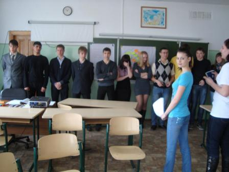
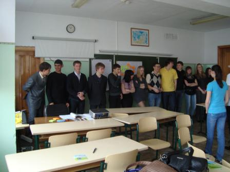
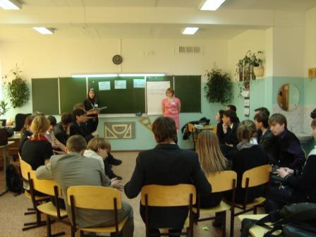
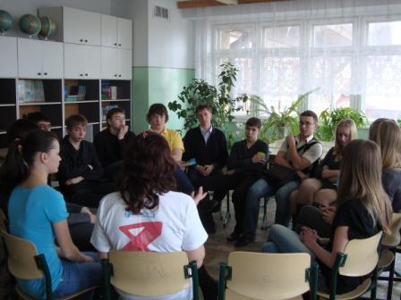

В МОУ гимназии № 2 г. Иркутска в апреле 2010 года прошла профилактическая акция совместно со студентами-волонтерами ИГПК «СПИДу – нет!» для 9-11 классов.




Старшеклассники проявили большой интерес к этой проблеме, приняли активное участие в проводимых тренингах и показали свои знания по данной тематике, полученные на уроках в разделе «Здоровый образ жизни».
Руководитель
социально-психологической службы
МОУ гимназии № 2